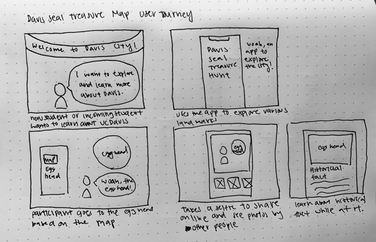

User Journey
After sharing my user journey with a peer, they shared that they really liked the idea and would have liked a mobile website such as this when they a freshman. They wondered how we would display the markers for egg heads since there are multiple. This is something that we might have to rethink and consider whether or not to only focus on one or all of them. She also corrected my on the sequence of my user journey map. In my user journey, I had the user read historical facts after taking pictures but my peer asked if they could read the facts before taking photos. Thus, I realized the sequence was incorrect and made the change. They also recommended that we focus on the oldest double deckered bus and even told me which route it usually takes. Taking this information, my partner and I will do more research and update our markers.